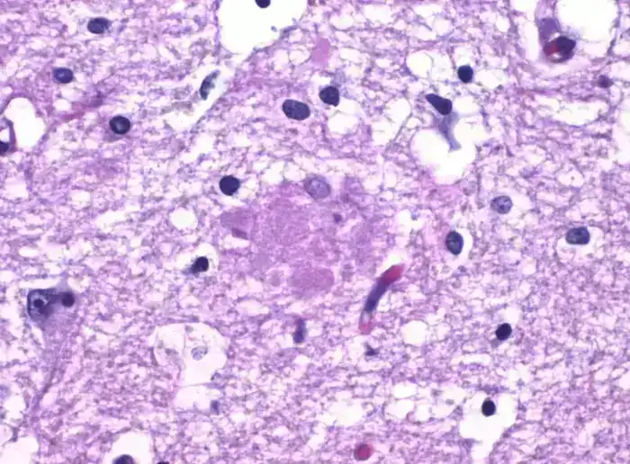

The hypothesis
The amyloid cascade hypothesis holds that the accumulation of amyloid-beta peptides — the plaques found in Alzheimer's brains since Alois Alzheimer's case of 1906 — initiates a cascade that leads to tau tangles, synaptic loss and dementia. It has been the dominant framework for three decades and the main target for drug development.
Maps, diagrams and images


The drugs
Lecanemab and donanemab, both antibodies against amyloid, were approved in the United States in 2023 and 2024. Trials showed a slowing of cognitive decline of roughly a quarter to a third on standard scales over eighteen months, alongside brain swelling and bleeding in a minority of patients. That is a real effect and a modest one.
Critics note that the effect size is small, that the correlation between plaque removal and benefit is weak, and that the field spent decades on a target that has produced only marginal results. Defenders note that a disease-modifying treatment now exists, which was not true a decade ago, and that tau and inflammation remain targets.
Documented: the plaques, the tangles, the clinical course.
Documented: antibodies remove amyloid and slow decline modestly.
Contested: whether amyloid is the cause or a marker.
Contested: whether the effect size justifies the cost and risk.
The honest label: live debate — with the important caveat that a small real effect has been measured, which is more than the field had before.
Why it is in the archive
Because it is the highest-stakes live debate in medicine, and because both the hype and the backlash have outrun the numbers.
Open resources on this topic
- PapersOpen-access articles: DOAJ · PubMed Central · Internet Archive Scholar
- BooksPublic-domain and borrowable copies: Open Library · Project Gutenberg · Google Books · Internet Archive
Cite this page
Momin, S. (2026). Amyloid and Alzheimer's. The Larger World Archive. https://drsamonline.github.io/LARGE_GLOBE/amyloid-alzheimers.htmlMomin, Sohil. “Amyloid and Alzheimer's.” The Larger World Archive, 2026, https://drsamonline.github.io/LARGE_GLOBE/amyloid-alzheimers.html.Momin, Sohil. “Amyloid and Alzheimer's.” The Larger World Archive, 2026. https://drsamonline.github.io/LARGE_GLOBE/amyloid-alzheimers.html.@misc{amyloid2026amyloid,
author = {Momin, Sohil},
title = {Amyloid and Alzheimer's},
year = {2026},
howpublished = {The Larger World Archive},
url = {https://drsamonline.github.io/LARGE_GLOBE/amyloid-alzheimers.html},
note = {Last reviewed 20 November 2026}
}Last reviewed 20 November 2026 · Corrections policy · this page is not peer reviewed
Sources for this page
- Wikipedia, “Amyloid beta” — the peptide and the hypothesisen.wikipedia.org
- Wikipedia, “Alzheimer's disease” — the disease and the drug trialsen.wikipedia.org
- Wikipedia, “Lecanemab” — the drug and its trialen.wikipedia.org
- Wikipedia, “Tau protein” — the other half of the pathologyen.wikipedia.org